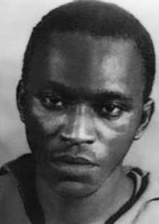

Francisco
Manoel
Chaves
CIRCUNSTÂNCIAS DA MORTE
Apesar das controvérsias sobre a data exata da morte de Francisco Manoel Chaves, a maioria dos relatos e registros convergem no que diz respeito às circunstâncias do seu desaparecimento.
O Relatório Arroyo descreve o episódio que teria ocorrido em 21 de setembro de 1972: “No Destacamento C, perto do dia 20 de setembro, dois companheiros, Vitor e Cazuza, deslocavam-se para fazer um encontro com três companheiros. Acamparam perto de onde devia ser o encontro. À tardinha, ouviram barulho de gente que ia passando perto. Cazuza achou que eram os companheiros e quis ir ao encontro deles, mas Vitor não permitiu. Disse que só devia ir ao ponto no dia seguinte. Pela manhã Cazuza convenceu Vitor a permitir que ele fosse ao local onde, na véspera, ouvira o barulho. Vitor ainda insistiu que não se devia ir ao ponto, mas acabou concordando.
Ao se aproximar do local do barulho, Cazuza foi metralhado e morreu. Vitor encontrou os três – Dina (Dinalva Oliveira Teixeira), Antonio (Antonio Carlos Monteiro Teixeira) e Zé Francisco (Francisco Chaves). Como estavam sem alimento, Vitor resolveu ir à roça de um tal de Rodrigues apanhar mandioca. Os companheiros disseram que lá não havia mais mandioca. Vitor, porém, insistiu. Quando se aproximaram da roça, viram rastros de soldados. Então, Vitor decidiu que os quatro deveriam esconder-se na capoeira, próxima à estrada, certamente para ver se os soldados passavam e depois então ir apanhar mandioca.
Acontece que, no momento exato em que os soldados passavam pelo local onde eles estavam, um dos companheiros fez um ruído acidental. Os soldados imediatamente metralharam os quatro. Dois morreram logo: Vitor e Zé Francisco. Antonio foi gravemente ferido e levado para São Geraldo, onde foi torturado e assassinado.”
O diário de Maurício Grabois também faz referência às circunstâncias da morte de Francisco: “No mês de setembro, por ocasião da grande campanha das FF AA contra o movimento guerrilheiro, o DC teve mais 4 baixas fatais. Todas elas por infração das leis da guerrilha e por inexperiência militar do seu VC. Este, em companhia de Cazuza, ia se encontrar com 3 co do D. No caminho, ouviram ruído de vozes. Cazuza achou, sem qualquer razão, que se tratava de gente da guerrilha. No dia seguinte de manhã, Vitor permitiu que seu companheiro fosse investigar, sem que houvesse qualquer necessidade de fazê-lo. Resultado: tratava-se de um acampamento inimigo. Cazuza foi descoberto e morto, sendo enterrado no próprio local. Sozinho, Vitor foi ao encontro de Antonio, Dina e Zé Francisco. Depois de apanha-los, ao passar por um caminho, Vitor observou rastros do inimigo. Resolveu então observá-lo, sem que houvesse motivo para isso. O local escolhido para a observação era péssimo: em frente a um cipoal e a uns poucos metros da estrada. Alguns co não acharam justa a decisão, mas Vitor insistiu. Três horas depois, o inimigo apareceu. Já tinha passado quase toda a tropa adversária, quando faltava passar apenas o último soldado, Zé Francisco fez barulho, talvez deixando cair a arma. Irrompeu, então, violento tiroteio. Dina caiu fora, tendo uma bala arranhado seu pescoço. Os outros três ficaram mortos no terreno.”
O relatório do Ministério Exército para o ministro da Justiça de 1993 faz menção a um registro da morte do guerrilheiro: “uma escuta radiofônica da Rádio Tirana da Albânia, realizada no período de 25 a 31 jul 74, teceu elogios ao nominado, revelando que estava entre os valorosos guerrilheiros do Araguaia quando a morte lhe encontrou”. Já relatório do CIE, Ministério do Exército, assenta sua morte em 20 de setembro de 1972.
Em entrevista ao jornal Opção, edição de 24 a 30 de junho de 2012, o sargento José Manoel Pereira afirmou que participou do evento que culminou nas mortes de José Toledo de Oliveira, Antônio Carlos Monteira Teixeira e Francisco Manoel Chaves. O militar declarou que ele estava no comando do grupamento composto por Soldado Raoil, Soldado Maurício, Soldado Arnaldo, Soldado Jean, Soldado Mascarenhas e Cabo Barreto, quando cruzaram com os militantes na região do Pau Preto. Com exceção dos dois últimos, todos teriam disparado contra os três guerrilheiros, que morreram.
Jean teria proferido o disparo que matou Francisco, e todos os seis militares teriam auxiliado no deslocamento dos corpos a um rancho de um homem também chamado José Pereira. No dia seguinte, os corpos foram carregados em um helicóptero da Aeronáutica para a Base Militar de São Geraldo do Araguaia (PA), que funcionava sob responsabilidade do General Bandeira. Nesta ação, estavam presentes o Sargento José Manoel Pereira e três outras pessoas, sendo uma delas o Sargento Eurípedes.
Ao detalhar as “ações mais importantes realizadas pelas peças de manobra”, o Relatório da Manobra Araguaia, assinado pelo General Antônio Bandeira, registra a morte desses três guerrilheiros como resultado de “Ação de emboscada, por uma esquadra (1 Cb e 5 Sd), em 26 set 72, numa grota distante cerca de 3km da casa do velho MANOEL”, realizada pelo 10º Batalhão de Caçadores. O documento fornece também informações sobre a localização do episódio que corroboram o relato de José Manoel Pereira: “Ação de patrulhamento, em 29 Set 72, executada por 2 GC, na Região de Pau Preto teve como resultado a morte dos seguintes terroristas (sic): JOSÉ TOLEDO DE OLIVEIRA ‘VICTOR’ (Sub Cmt Dst C); ANTONIO CARLOS MONTEIRO TEIXEIRA ‘ANTONIO’ (Dst C – Cmt Grupo 500); ‘ZÉ FRANCISCO’ ou ‘PRETO VELHO’ (Dstc C – Grupo 500). Ao lado do terceiro guerrilheiro há uma inscrição à mão identificando-o como ‘José Francisco Chaves’.
Por fim, há uma observação consignando que, no evento, foi apreendida “farta documentação subversiva abordando tópicos de doutrina, observações a respeito da tropa que os perseguia, além de detalhados croquis sobre a parte da área de operação”. Neste sentido, o livro Dossiê Ditadura faz referência ao depoimento do sobrevivente da Guerrilha Dower Morais Cavalcanti à 1ª Vara da Justiça Federal sobre o período em que esteve preso no Pará. Dower afirma que foi convocado pelo General Bandeira a comparecer na base de Xambioá (TO), e que lhes foram exibidas fotos de José Toledo de Oliveira, Francisco Manoel Chaves e Antônio Carlos Monteiro Teixeira mortos.
O ex-guerrilheiro também alega ter visto uma vala comum, onde seus corpos estariam enterrados no cemitério de Xambioá (TO), e diversos documentos que seriam dos seus companheiros, como uma carta de Francisco à Comissão Militar da guerrilha.
Despite controversies regarding the exact date of Francisco Manoel Chaves' death, most reports and records converge with regard to the circumstances of his disappearance.
The Arroyo Report describes the episode that occurred on September 21, 1972: "In Detachment C, around September 20, two companions, Vitor and Cazuza, were traveling to meet three companions. They camped close to where the meeting was supposed to take place. In the afternoon, they heard the noise of people passing by. Cazuza thought it was the companions and wanted to go to meet them, but Vitor didn't allow it. He said he should only go to the point at next day. In the morning, Cazuza convinced Vitor to allow him to go to the place where, the day before, he had heard the noise. Vitor still insisted that he should not go to the spot, but ended up agreeing.
As he approached the scene of the noise, Cazuza was machine-gunned and died. Vitor found the three – Dina (Dinalva Oliveira Teixeira), Antonio (Antonio Carlos Monteiro Teixeira) and Zé Francisco (Francisco Chaves). As they were without food, Vitor decided to go to the field of a certain Rodrigues to collect cassava. The companions said that there was no more cassava there. Vitor, however, insisted. When they approached the field, they saw tracks of soldiers. So, Vitor decided that the four of them should hide in the capoeira, close to the road, certainly to see if the soldiers were passing by and then go collect cassava.
It turns out that, at the exact moment the soldiers were passing by the place where they were, one of their companions made an accidental noise. The soldiers immediately machine-gunned the four. Two died soon: Vitor and Zé Francisco. Antonio was seriously injured and taken to São Geraldo, where he was tortured and murdered.”
Maurício Grabois's diary also makes reference to the circumstances of Francisco's death: “In the month of September, on the occasion of the great campaign of the FF AA against the guerrilla movement, the DC had 4 more fatal casualties. All of them due to the violation of guerrilla laws and the military inexperience of their VC. This one, in the company of Cazuza, was going to meet 3 of D's dogs. On the way, they heard the sound of voices. Cazuza thought, without any reason, that they were guerrilla fighters. The next morning, Vitor allowed his companion to investigate, without there being any need to do so. Result: it was an enemy camp. Cazuza was discovered and killed, being buried on site. Alone, Vitor went to meet Antonio, Dina and Zé Francisco. After catching them, when passing along a path, Vitor observed traces of the enemy. He then decided to observe him, without there being any reason to do so. The location chosen for observation was terrible: in front of a cipoal grove and a few meters from the road. Some people didn't think the decision was fair, but Vitor insisted. Three hours later, the enemy appeared. Almost the entire opposing troop had already passed, when only the last soldier was left to pass, Zé Francisco made a noise, perhaps dropping his weapon. Violent gunfire then broke out. Dina fell out, having a bullet graze her neck. The other three were left dead on the ground.”
The Army Ministry's report to the Minister of Justice in 1993 mentions a record of the guerrilla's death: “a radio listening to Albania's Radio Tirana, carried out in the period from 25 to 31 July 74, praised the nominee, revealing that he was among the brave guerrillas of Araguaia when death found him”. A report from the CIE, Ministry of the Army, places his death on September 20, 1972.
In an interview with the newspaper Opção, edition from June 24 to 30, 2012, Sergeant José Manoel Pereira stated that he participated in the event that culminated in the deaths of José Toledo de Oliveira, Antônio Carlos Monteira Teixeira and Francisco Manoel Chaves. The soldier declared that he was in command of the group composed of Private Raoil, Private Maurício, Private Arnaldo, Private Jean, Private Mascarenhas and Cabo Barreto, when they crossed paths with the militants in the Pau Preto region. With the exception of the last two, everyone would have shot at the three guerrillas, who died.
Jean would have fired the shot that killed Francisco, and all six soldiers would have helped move the bodies to a ranch belonging to a man also named José Pereira. The following day, the bodies were loaded onto an Air Force helicopter to the Military Base of São Geraldo do Araguaia (PA), which operated under the responsibility of General Bandeira. In this action, Sergeant José Manoel Pereira and three other people were present, one of them being Sergeant Eurípedes.
When detailing the “most important actions carried out by the maneuver pieces”, the Araguaia Maneuver Report, signed by General Antônio Bandeira, records the death of these three guerrillas as the result of “Ambush action, by a squadron (1 Cb and 5 Sd), on 26 September 72, in a cave approximately 3km from old MANOEL's house”, carried out by the 10th Battalion of Hunters. The document also provides information about the location of the episode that corroborates José Manoel Pereira's report: “Patrolling action, on 29 Sep 72, carried out by 2 GC, in the Pau Preto Region resulted in the death of the following terrorists (sic): JOSÉ TOLEDO DE OLIVEIRA ‘VICTOR’ (Sub Cmt Dst C); ANTONIO CARLOS MONTEIRO TEIXEIRA ‘ANTONIO’ (Dst C – Cmt Group 500); ‘ZÉ FRANCISCO’ or ‘PRETO VELHO’ (Dstc C – Group 500). Next to the third guerrilla there is an inscription identifying him as ‘José Francisco Chaves’.
Finally, there is an observation stating that, at the event, “abundant subversive documentation covering topics of doctrine, observations regarding the troops that pursued them, as well as detailed sketches of part of the area of operation” were seized. In this sense, the book Dossiê Ditadura refers to the testimony of Guerrilla survivor Dower Morais Cavalcanti to the 1st Court of Federal Justice about the period in which he was imprisoned in Pará. Dower states that he was summoned by General Bandeira to appear at the base in Xambioá (TO), and that they were shown photos of the dead José Toledo de Oliveira, Francisco Manoel Chaves and Antônio Carlos Monteiro Teixeira.
The former guerrilla also claims to have seen a mass grave, where their bodies were buried in the Xambioá cemetery (TO), and several documents that belonged to his companions, such as a letter from Francisco to the guerrilla's Military Commission.
A pesar de las controversias sobre la fecha exacta de la muerte de Francisco Manoel Chaves, la mayoría de los informes y registros coinciden en cuanto a las circunstancias de su desaparición.
El Informe Arroyo describe el episodio ocurrido el 21 de septiembre de 1972: "En el Destacamento C, alrededor del 20 de septiembre, dos compañeros, Vítor y Cazuza, viajaban para encontrarse con tres compañeros. Acamparon cerca de donde se suponía que se realizaría la reunión. Por la tarde escucharon un ruido de gente que pasaba. Cazuza pensó que eran los compañeros y quería ir a su encuentro, pero Vítor no se lo permitió. Dijo que sólo debía ir al punto en Al día siguiente, Cazuza convenció a Vítor para que le permitiera ir al lugar donde el día anterior había escuchado el ruido. Vítor aún insistió en que no fuera al lugar, pero terminó accediendo.
Cuando se acercaba al lugar del ruido, Cazuza fue ametrallado y murió. Vitor encontró a los tres: Dina (Dinalva Oliveira Teixeira), Antonio (Antonio Carlos Monteiro Teixeira) y Zé Francisco (Francisco Chaves). Como se encontraban sin comida, Vítor decidió ir al campo de un tal Rodrigues a recolectar mandioca. Los compañeros dijeron que allí ya no había yuca. Vítor, sin embargo, insistió. Cuando se acercaron al campo, vieron huellas de soldados. Entonces, Vítor decidió que los cuatro se escondieran en la capoeira, cerca del camino, seguramente para ver si pasaban los soldados y luego ir a recoger yuca.
Resulta que, en el momento exacto en que los soldados pasaban por el lugar donde se encontraban, uno de sus compañeros hizo un ruido accidental. Los soldados inmediatamente ametrallaron a los cuatro. Dos murieron pronto: Vitor y Zé Francisco. Antonio resultó gravemente herido y llevado a São Geraldo, donde fue torturado y asesinado”.
El diario de Maurício Grabois también hace referencia a las circunstancias de la muerte de Francisco: “En el mes de septiembre, con motivo de la gran campaña de las FF AA contra la guerrilla, la DC tuvo 4 bajas fatales más. Todo ello por la violación de las leyes guerrilleras y la inexperiencia militar de su VC. Éste, en compañía de Cazuza, iba a encontrarse con 3 de los perros de D. En el camino escucharon voces. Cazuza pensó, sin razón alguna, que eran guerrilleros. A la mañana siguiente, Vítor permitió que su compañero investigara, sin que fuera necesario hacerlo. Resultado: Era un campamento enemigo. Cazuza fue descubierta y asesinada, siendo enterrada en el lugar. Solo, Vítor fue a encontrarse con Antonio, Dina y Zé Francisco. Después de atraparlos, al pasar por un camino, Vítor observó huellas del enemigo. Entonces decidió observarlo, sin que existiera motivo alguno para ello. El lugar elegido para la observación fue terrible: Frente a arboleda de cipoal y a metros de la carretera. A algunos no les pareció justa la decisión, pero Vítor insistió. Tres horas después apareció el enemigo. Casi toda la tropa enemiga ya había pasado, cuando solo quedaba pasar el último soldado, Zé Francisco hizo un ruido, quizás dejando caer su arma. Luego se produjeron violentos disparos. Dina se cayó y una bala le rozó el cuello. Los otros tres quedaron muertos en el suelo”.
El informe del Ministerio del Ejército al Ministro de Justicia en 1993 menciona un registro de la muerte del guerrillero: “una radio que escuchaba Radio Tirana de Albania, realizada en el período del 25 al 31 de julio de 1974, elogió al candidato, revelando que estaba entre los valientes guerrilleros de Araguaia cuando la muerte lo encontró”. Un informe del CIE, Ministerio del Ejército, sitúa su muerte el 20 de septiembre de 1972.
En entrevista con el diario Opção, edición del 24 al 30 de junio de 2012, el sargento José Manoel Pereira afirmó haber participado en el hecho que culminó con la muerte de José Toledo de Oliveira, Antônio Carlos Monteira Teixeira y Francisco Manoel Chaves. El militar declaró que estaba al mando del grupo compuesto por el soldado Raoil, el soldado Maurício, el soldado Arnaldo, el soldado Jean, el soldado Mascarenhas y Cabo Barreto, cuando se cruzaron con los militantes en la región de Pau Preto. A excepción de los dos últimos, todos habrían disparado contra los tres guerrilleros, quienes murieron.
Jean habría disparado el tiro que mató a Francisco, y los seis soldados habrían ayudado a trasladar los cuerpos a un rancho perteneciente a un hombre también llamado José Pereira. Al día siguiente, los cadáveres fueron cargados en un helicóptero de la Fuerza Aérea hasta la Base Militar de São Geraldo do Araguaia (PA), que operaba bajo la responsabilidad del general Bandeira. En esta acción estuvo presente el sargento José Manoel Pereira y otras tres personas, siendo una de ellas el sargento Eurípedes.
Al detallar las “acciones más importantes realizadas por las piezas de maniobra”, el Informe de Maniobra de Araguaia, firmado por el General Antônio Bandeira, registra la muerte de estos tres guerrilleros como resultado de una “Acción de emboscada, por parte de un escuadrón (1 Cb y 5 Sd), el día 26 de septiembre de 72, en una cueva a aproximadamente 3 km de la casa del viejo MANOEL”, realizada por el 10º Batallón de Cazadores. El documento también proporciona información sobre la ubicación del episodio que corrobora el relato de José Manoel Pereira: “La acción de patrullaje, el día 29 de septiembre de 72, realizada por el 2 GC, en la Región de Pau Preto resultó en la muerte de los siguientes terroristas (sic): JOSÉ TOLEDO DE OLIVEIRA ‘VICTOR’ (Sub Cmt Dst C); ANTONIO CARLOS MONTEIRO TEIXEIRA ‘ANTONIO’ (Dst C – Cmt Group 500); ‘ZÉ FRANCISCO’ o ‘PRETO VELHO’ (Dstc C – Grupo 500) Al lado del tercer guerrillero hay una inscripción que lo identifica como ‘José Francisco Chaves’.
Finalmente, hay una observación que señala que en el hecho fue incautada “abundante documentación subversiva que abarca temas doctrinales, observaciones sobre las tropas que los perseguían, así como croquis detallados de parte del área de operación”. En este sentido, el libro Dossiê Ditadura se refiere al testimonio del sobreviviente de la guerrilla Dower Morais Cavalcanti ante el 1º Tribunal de Justicia Federal sobre el período en que estuvo preso en Pará. Dower afirma que fue citado por el general Bandeira para presentarse en la base de Xambioá (TO), y que les mostraron fotografías de los muertos José Toledo de Oliveira, Francisco Manoel Chaves y Antônio Carlos Monteiro Teixeira.
El exguerrillero también afirma haber visto una fosa común, donde fueron enterrados sus cuerpos, en el cementerio de Xambioá (TO), y varios documentos que pertenecieron a sus compañeros, como una carta de Francisco a la Comisión Militar de la guerrilla.